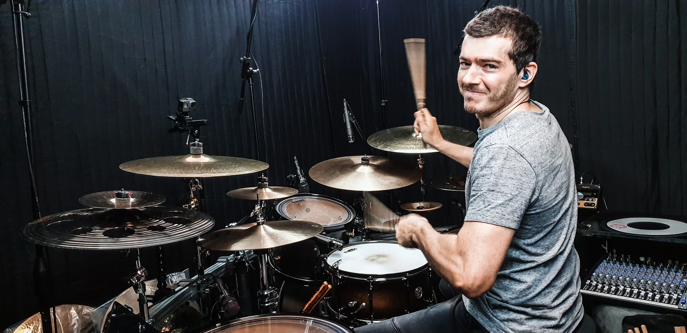

Tap the pads. Find your rhythm.
Dave D’Amore
A life driven by rhythm.
Free practice tools
01 / About
Behind the kit

I'm Dave D'Amore, a Melbourne-based drummer with 30 years of experience, performing everywhere from intimate venues to major festivals. My musical roots lie in progressive rock, metal and alternative music, with influences spanning fusion, funk and jazz. I'm drawn to rhythmic complexity, but feel, dynamics and musicality always come first.
More than the drums
Beyond performing, I'm passionate about recording, production and the creative process. Playing and writing on guitar and bass, alongside my recording and mixing work, has broadened my understanding of how instruments work together. I spent a decade in Cairns, QLD, where I played at a few large-scale festivals and recorded drums for an EP featuring award-winning tracks. I bring that experience to my session drumming and recording services, whether developing parts from scratch or bringing an artist's ideas to life.
Sharing that experience through teaching has been a major part of my journey. During those years in Cairns, I ran my own drum school, where I taught over 50 students alongside my performing and recording work. Today, through my private drum lessons in Campbellfield, I help students build strong technique, coordination, rhythmic understanding and creativity, while encouraging them to explore their own musical interests and develop an individual voice behind the kit.
My approach to playing and teaching also draws on 15 years in the fitness industry, coaching strength, conditioning, mobility and movement. For 12 of those years, I ran my own gym, Shoshin Movement. That background has deepened my understanding of biomechanics, ergonomics and efficient movement, and how they apply to playing drums. I bring that knowledge into posture, coordination and technique, with an emphasis on injury prevention and helping drummers play efficiently, comfortably and sustainably.
Watch / Behind the kit
Drums in motion
Karnivool "Drone" – Drum Cover

02 / Education
Find your rhythm

One-on-one drum lessons. Campbellfield, Melbourne.
Open to ages 10+ and all experience levels, from complete beginners to advanced drummers.
Develop your technique, timing, groove and musicality through progressive lessons tailored to you.
30Years playing
7Years running a drum school
50+Students
03 / Recording
Your music
My drums
Melbourne studio. Worldwide reach.
Professional acoustic drum recording and session drumming from Melbourne for artists, bands and producers across Australia and worldwide. Every performance is shaped around the song, with a focus on feel, dynamics and musicality.
04 / GET IN TOUCH